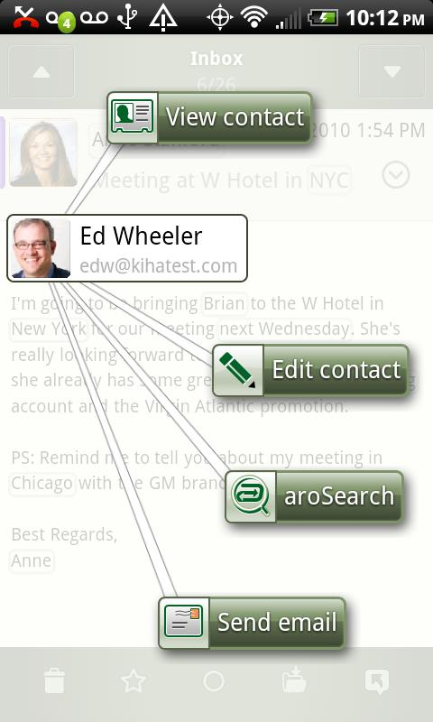

## CLMS Career Exploration Talk
### Oct 9, 2012
## About Me
* BA, Linguistics from UW in 2008
* Graduated from CLMA in 2010
* Currently works as a software developer at [Substantial](http://substantial.com)
## Overview
* Kiha Software
* Aro Mobile, Kiha's product
* Aro and NLP
* What I did at Kiha
* Hackathon!
* What was most useful from CLMA
* What I learned about NLP outside of CLMA
* Final words
* Q/A
##
* Founded in 2008
* Launched Aro Mobile in 2010
* I joined in Sept, 2010
## Aro Mobile
* Service and personal information manager (PIM) for Android that:
* Understands your data
* Makes you faster and more efficient at managing email, contacts, calendar
* Email client
* Contacts manager
* Calendar
## Aro Mobile -- how does it work?
1. You give Aro your email credentials (Gmail / Exchange / IMAP)
1. Aro reads all your email
1. Aro keep models of who/what is important to you (we NEVER keep your email)
1. Aro make it easy to communicate with who you want
Aro Mobile -- how does it work?
Hi Josh,
Could you give Mark a call at 3pm tomorrow?
Thanks,
Bob
Bob the Builder
1337 Pro Builder Lane
Seattle, WA 98122
Aro Mobile's Email Client

## Aro and NLP
* Entity Extraction Service (EES)
* Extracted entities:
* Names, places, businesses
* Phone numbers
* Tracking numbers (USPS, UPS, Fedex)
* Flight numbers
* Email signatures
* Calendar events
* Addresses
* Email addresses
Bubbleator Live Wallpaper
## What I did at Kiha
* Automating model training through continuous integration with Maven
* Feature engineering for NER models
* Improving performance, while maintaining precision/recall
# Hackathon!
* Extending EES: recognizing conference call meeting numbers
* Hacking the Android app to auto-dial conference calls
Hi Bob,
Dora the Explorer invites you to attend this online meeting.
Topic: Computational Linguistics
Date: Monday, January 10, 2013
Time: 2:15 pm, Pacific Standard Time (San Francisco, GMT-08:00)
Meeting Number: 736 771 237
CCP:+16504293300x736771237#
## What was most useful from CLMA
* 570, 572
* i2b2 Medical Extraction Challenge
* Experience with MALLET, libSVM
* Familiarity with what algorithms and techniques are available
## What I learned about NLP outside of CLMA
* Use existing libaries, most of my time was spent thinking about features (not algorithms)
* Sometimes boring techniques are good enough (e.g. name recognition from list of names)
* Learn to have a sense of what "good enough" performance is
## Final words
* Kiha has since rebranded and changed their product vision (now a personal assistant thingy?)
* For current job seekers: Hacker News Meetup, Seattle.rb, Android Meetup, Beer && Code